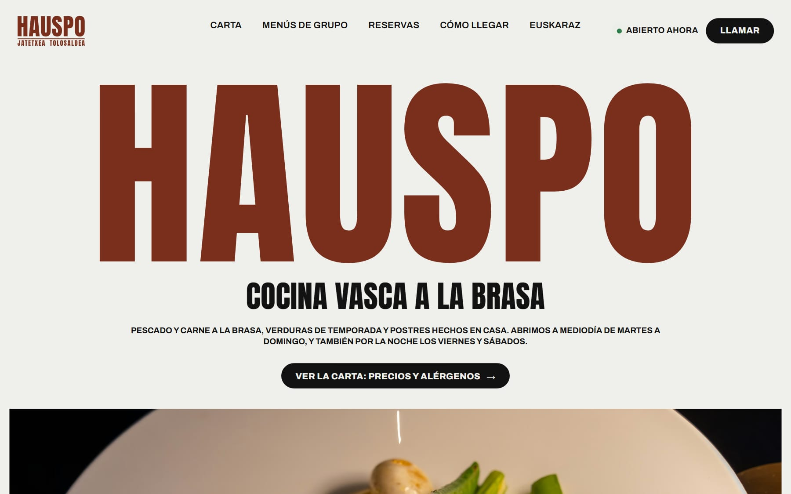

Reseñas contestadas, con tu tono
Cada opinión nueva en Google te llega con la respuesta ya escrita: corta, con el nombre de quien la dejó, en su idioma y sin frases de plantilla. Tú dices «vale» (o la cambias) y la publico.
| Paso | Quién |
|---|---|
| Redacta el borrador | La IA |
| Lo revisa y lo ajusta a tu tono | Yo |
| Dice «vale» | Tú |
| Lo publica en tu ficha | Yo |
Las malas van aparte: borrador tranquilo, sin discutir, y te aviso para que lo hablemos antes. Va dentro de la cuota de 28 €/mes de tu web.
Por qué importa contestar las reseñas
Una respuesta a una reseña no es solo para quien la escribió. La lee también el próximo cliente, el que todavía no te conoce y está mirando tu ficha antes de decidir. Estas son las razones, con su fuente:
- Las reseñas cuentan para salir en Google. Según la ayuda de Google para empresas, tener más reseñas y buenas valoraciones puede mejorar tu posición en las búsquedas locales, y contestarlas demuestra que valoras lo que te dicen tus clientes.
- Contestar ayuda a subir la nota. Un estudio con miles de hoteles (Proserpio y Zervas, Harvard Business Review, 2018) vio que los que empezaron a responder subieron de media algo más de una décima de estrella, sin cambiar nada más. Los autores lo explican así: cuando el cliente ve que el dueño lee y contesta, se lo piensa más antes de dejar una queja sin fundamento.
- Una mala sin contestar se queda ahí años. Una respuesta tranquila, que no discute y ofrece hablarlo, convierte la queja en una prueba de que cuidas a la gente.
- Es lo que leen las IAs. Cuando alguien pregunta a una IA con buscador «dónde comer» o «qué peluquería», lo que encuentra de ti es tu ficha: tu nota y tus opiniones. Cuanto mejor cuidada, mejor.
Lo difícil no es escribir la respuesta: es acordarse cada semana, saber qué poner cuando es mala y no contestar en caliente. Eso es lo que hago yo.
"Nunca contestes una mala reseña el mismo día que la lees. Déjala reposar, responde corto, sin discutir, y ofrece hablarlo en privado."
La carta en cuatro idiomas
Si tu carta es una foto o un PDF escaneado, a Google y a las IAs les cuesta leerla. La paso a texto, la traduzco al euskera (por Itzultzaile), al francés y al inglés, la reviso, dejo los nombres de siempre sin traducir (txuleta, pimientos de piquillo) y la pongo en tu web y en tu ficha de Google. 60 € + IVA, una vez; cuando cambias un plato, me lo mandas por WhatsApp y entra en los cambios de la cuota.
Los alérgenos los pongo solo si me los das tú: eso no lo decide ninguna IA.
Cómo te ven Google y las IAs
Le pregunto a una IA con buscador lo que preguntaría un cliente («¿dónde comer txuleta cerca de aquí?», «¿qué restaurante abre el lunes?») y lo comparo con tu ficha: horario, web, teléfono y si te nombra. Te lo enseño gratis; si quieres que lo arregle yo, es la presencia en Google: 120 € + IVA, una vez, con la ficha completa, el QR de reseñas, Bing y Apple Maps.
Reservas de mesa, sin IA
Las reservas no llevan IA, y es a propósito: tu cliente elige día, hora y personas, y la petición te llega al móvil con todo escrito. Confirmas tú cuando puedes, sin coger el teléfono en pleno servicio y sin comisión por reserva. Pack restaurante (web con secciones, reservas y carta editable): 740 € + 28 €/mes; si te basta una página, 580 € + 28 €/mes.

Qué parte hace la IA. En cada solución te digo qué hace la IA y qué hago yo. Ninguna IA habla con tus clientes en tu nombre sin que lo sepan: si algún día pones un asistente que contesta solo, tiene que avisar de que es una IA, como exige el artículo 50 del Reglamento europeo de IA.
Si lo que te quita tiempo es otra cosa
Ofrecemos soluciones de IA adaptadas a cada empresa. Si tu problema no está en la lista, lo estudio y te digo el precio en 24 horas. Algunas cosas que se pueden montar con herramientas que ya existen:
- Un teléfono que se atiende solo cuando no puedes cogerlo: toma el recado, da el horario y manda el enlace para reservar. Al empezar dice que es un asistente con IA.
- Un WhatsApp que contesta lo de siempre (horario, precios, cómo reservar) con el asistente de IA que ya trae WhatsApp Business. Pasa a una persona lo que no sabe y avisa de que es una IA.
- Facturas de gastos sin teclear: haces una foto y la IA pasa el proveedor, la base y el IVA a una hoja para tu gestoría.
Estas te las monto para tu caso: no son un programa ya hecho. Antes te digo si de verdad te compensa, se prueban contigo y no pagas nada hasta que funcionan.
Te enseño gratis qué dice una IA de tu restaurante
Y cuántas reseñas tienes sin contestar. Cinco minutos, en tu móvil.
Preguntas frecuentes
¿La IA contesta sola a las reseñas de mi restaurante?
No. La IA escribe el borrador, yo lo reviso y no se publica nada sin tu «vale». Las reseñas malas, además, las hablamos antes.
¿Cuánto cuesta la carta en idiomas?
60 € + IVA, una vez, en euskera, castellano, francés e inglés, puesta en tu web y en Google. Los cambios de platos entran en la cuota de tu web.
¿Las reservas de mesa usan IA?
No. Funcionan con reglas fijas: tu cliente pide mesa y tú la confirmas. Así nadie decide por ti ni se equivoca de día.
¿Y si me llaman en pleno servicio?
Se puede montar un teléfono que coge el recado y manda el enlace para reservar, avisando de que es un asistente con IA. Lo estudio para tu caso y te digo el precio en 24 horas.
Sigue leyendo: IA para negocios en Gipuzkoa, web para restaurante y reservas online sin comisiones.